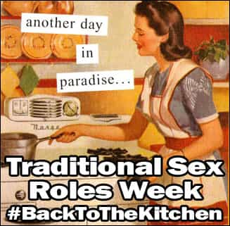

< < < Back
Women Belong At Home, Not At The Office – Return Of Kings

A short time ago I wrote this article on my grandmother and how her unfettering embodiment of the traditional role of housewife has had nothing but positive effects on both her and everyone around her. If you have a few extra minutes you may want to read (or re-read) that article as it fits quite well into our Traditional Sex Roles week here at ROK.
That article demonstrates to us the benefits resulting from embracing the traditional gender roles we used to have. When we deviate from these roles, e.g. women in the workplace, we find that a net negative is created for both the man and the woman.
Women Are Happier At Home
Let’s compare two vocations for a moment – the lawyer and the kindergarten teacher.
You have probably heard of the phrase “lawyer cunt” thrown around. It is based on the concept of a female lawyer who is unpleasant to be around. Why? Because lawyers typically work very long hours and are stressed out constantly. So when you meet a female lawyer, she is usually quite the bitch and her masculine ways make it almost unbearable to be around – hence the term. She is aggressive, argumentative, and in order to be successful, cannot be submissive. In fact, a survey from a few years ago pegged unmarried female professional (read: attorney) without children as the unhappiest of all people.
You have also probably heard of the idealized concept or expression of “dating a kindergarten teacher.” This idea is based on the notion that kindergarten teachers are sweethearts, family-oriented good girls that know the art of nurturing and care. While they are still part of the workforce, it is one of the few vocations that mimics in part the duties of a homemaker. They are there to take care of the young kids and provide a sort of “home” during the day.
Now which girl do you think is happier? The one working 60+ hours a week being yelled at by partners, clients, and judges or the one who’s there from 9-5 making sure Timmy got his nap and is reading Dr. Seuss books?
These two examples tend to show some of the opposite extremes of deviating from and staying close to the traditional gender role for a woman. When you take an actual homemaker, you have a girl that is now even more aligned with her biological self. Ever notice that when a girl is really in love with you, she would do anything for you? While that desire derives from a variety of things, one large part is her desire to serve and please you as a manifestation of her happiness. This is not coincidental.
Women Are Terrible Employees
I’ve employed a few women now at my business. None of them lasted, and frankly I am extremely hesitant to do so ever again. While their skill levels varied, I won’t dwell on that because some men can also be similarly unskilled. However, a few things kept resurfacing over and over again:
-
They won’t shut up. They would talk my ear off every moment they could. The first assistant we had, we were still working from our homes so she would come over and work in close proximity. There was no escape from her in my small home, so I had to tolerate all her gabbing.
-
They are unreliable. One girl I hired failed to show up on time to join me in court, something she asked if she could do. This was her first day of work. Needless to say, there wasn’t a second.
-
They can be psychos. I had to battle through a Fatal Attraction-type scenario with one assistant. She saw me out on a date, then went nuts and tried to seduce me nonstop, even making up lies about “how I told her I miss her” and so on. It was actually a bit unsettling.
-
They game the system. When working at the firm before going off on my own, one girl there would work a few months, get pregnant, then take maternity leave for half the year. She did this 3 times in a row, then quit.
These are just a few things. Now I have a male assistant and we are more productive than ever before. Men rarely gab for hours, they generally know the value of time and reliability, and even if you are in the practice of hiring gay guys they don’t develop schoolgirl crushes on you. Nor do they take maternity leave for months on end.
If I’m running a Hooters restaurant then sure, I will be hiring girls. But in an office setting – no thanks.
The End Result
The Western World ignores thousands of years of history encompassing traditional gender roles in favor of this “liberal” world where everything should be fair, equal,and wonderful. Everyone is worse off when we deviate from these traditional gender roles. Women are less happy, men are increasingly miserable, businesses fail and global warming is on the rise.*
We say #BackToTheKitchen, but it is not meant to be condescending or satirical. It is a plea to increase the happiness of both genders and to try to save what little we have left of the society that once was.
Share your thoughts on Traditional Sex Roles Week using the hashtag #BackToTheKitchen.
Read Next: Why America Causes Men To Be Unnatural
* One theory of global warming is that it’s caused by the increase of women in the workforce, which leads to more cars on the road, which leads to more pollution eroding the ozone layer, and hence increased global warming.